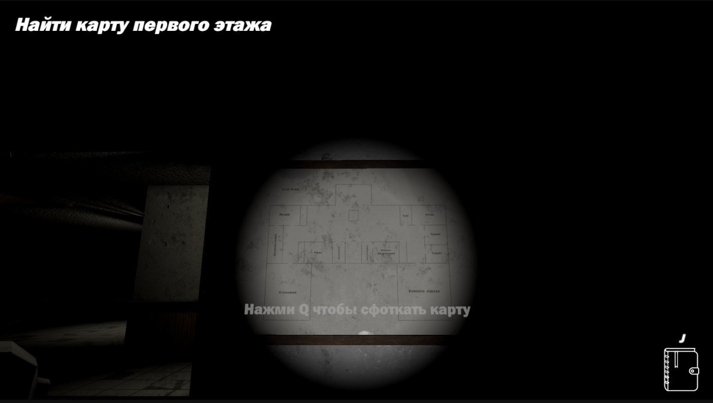
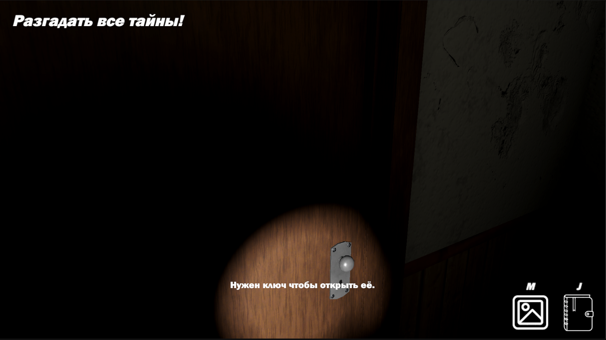
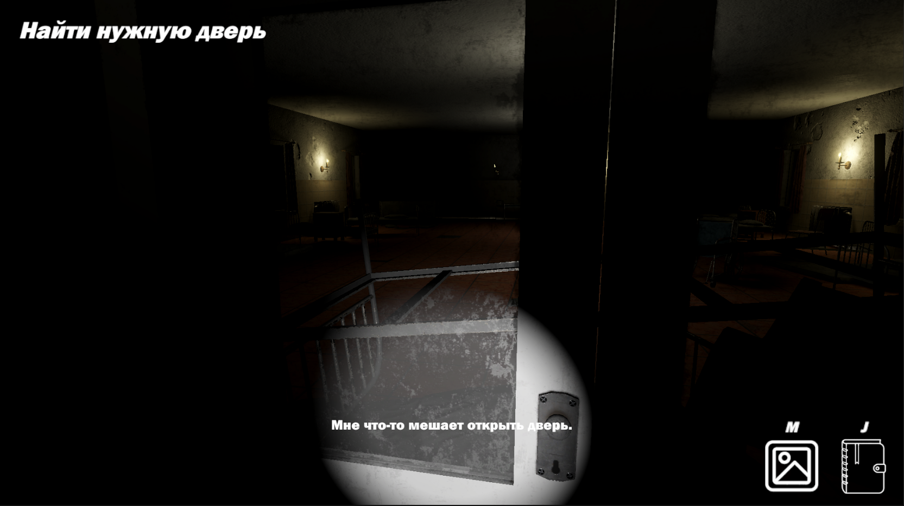
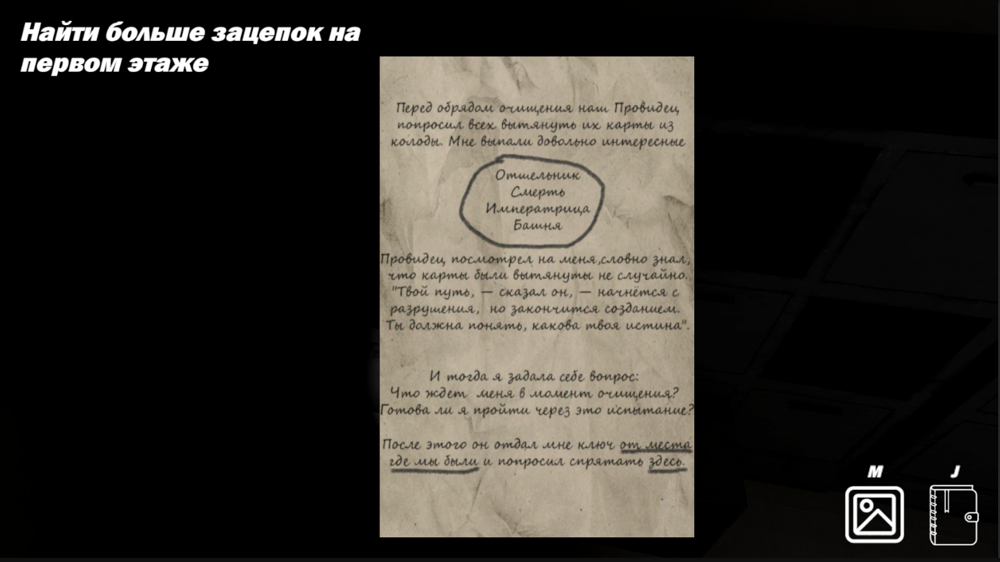
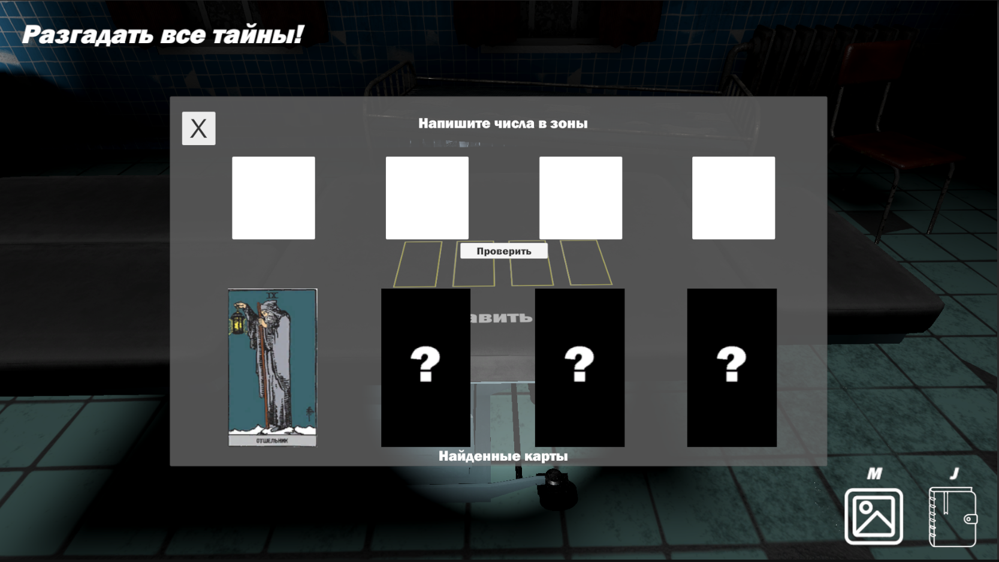
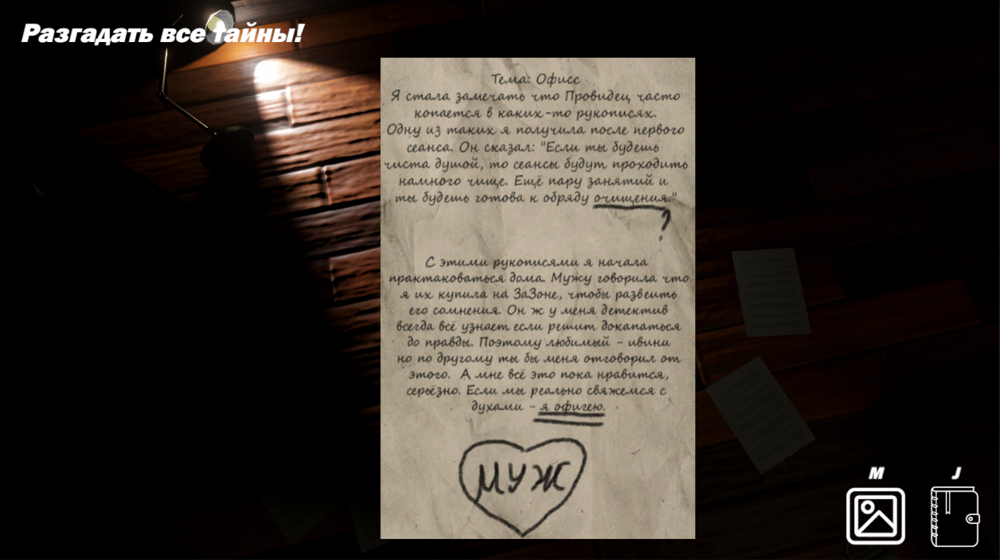

Gameplay Development
Двери, замки, ключи, checkpoints, triggers, progression и интерактивные объекты. Связал взаимодействия с логикой прохождения уровня.
УЧЕБНЫЙ КОМАНДНЫЙ ПРОЕКТ
Психологический детектив о поиске пропавшей жены в заброшенной больнице. Игрок собирает записки в обратном хронологическом порядке, решает загадки и постепенно раскрывает историю больницы и связанного с ней культа.
ОБ ИГРЕ
Главный герой ищет пропавшую жену в заброшенной больнице. Найденные записки идут от последних событий к более ранним и содержат подсказки, загадки и фрагменты истории. По мере прохождения игрок восстанавливает цепочку событий и узнаёт о культе, с которым была связана жена.
МОЙ ВКЛАД
Двери, замки, ключи, checkpoints, triggers, progression и интерактивные объекты. Связал взаимодействия с логикой прохождения уровня.
Работал над прохождением, размещением улик и головоломок, навигацией, освещением, props и настройкой окружения.
Создавал и интегрировал Unity animation clips, подключал FMOD и spatial audio, связывал scripts, animations и audio с объектами сцены.
ГЕЙМПЛЕЙ






DEVELOPMENT NOTES
Для окружения использовалась базовая модель больницы из Asset Store, а также готовые модели радиального замка, монтировки и ключей. Доски, записки, карты Таро и анимации создавались в рамках проекта. Второй участник команды реализовал систему записок и личный журнал для повторного чтения найденных записок.
ССЫЛКИ